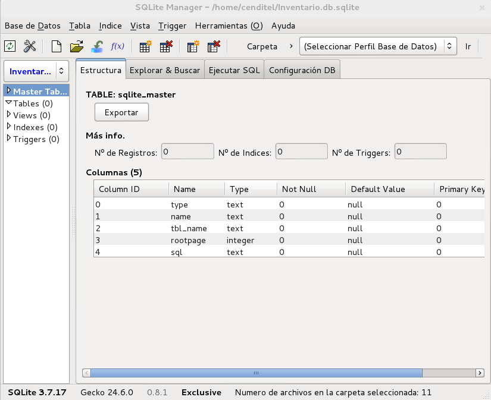
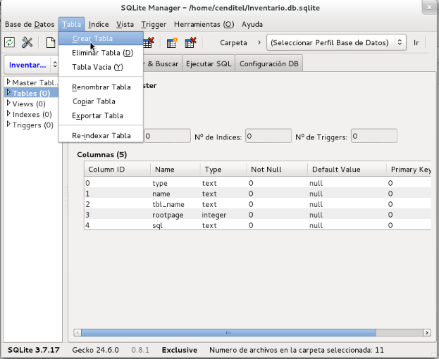
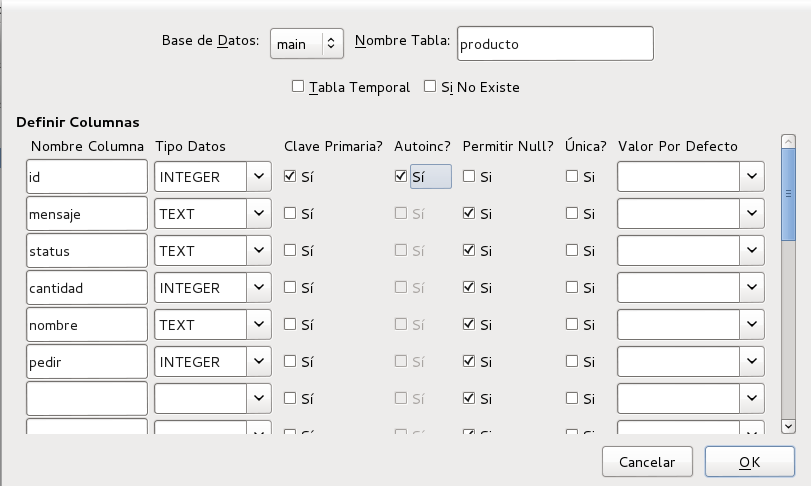
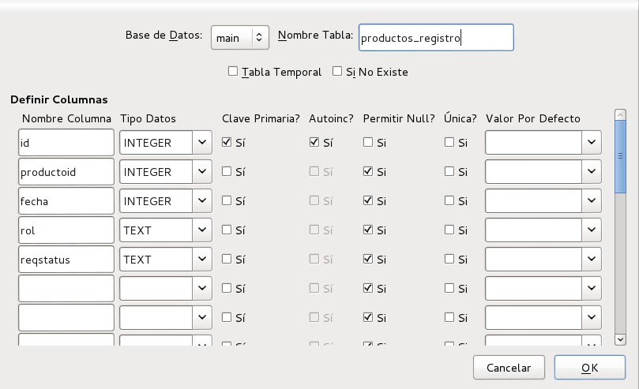

Creación de las tablas en base de datos¶
Primer Paso:
- Se agrega la herramienta plugin del navegador web Firefox con el siguiente enlace. sqlite-manager
Aceptamos el botón Permitir.
Aceptamos el botón Instalar.

Figura 12: sqlite-manager. Segundo Paso:
Abrimos sqlite-manager en el navegador web Firefox.
Buscamos en la barra de herramientas a sqlite-manager.
Le damos clik donde dice sqlite-manager.

Figura 13: Navegador sqlite-manager. Ya tenemos la herramienta sqlite-manager abierta para su uso.

Figura 14: sqlite-manager abierto. Tercer Paso:
Creamos la base de datos.
Pulsamos donde esta la pagina en blanco como aparece en la imagen.

Figura 15: Opción. Colocamos el nombre a la base de datos con el formato .db.

Figura 16: Nombre de la base de datos. La guardamos en mi carpeta personal <HOME>.safet/.
Se abrirá automáticamente la base de datos con sus campos, como aparece en la siguiente imagen.

Figura 17: Base de datos. Cuarto Paso:
Creación de la tablas “productos”, “productos_registro”.
Buscamos en la barra de herramientas donde dice Table.
Pulsamos en la opción de Crear Tabla.

Figura 18: Opción de tables. Nos aparecerá un formulario vacío sin nombre ni atributos, como en la siguiente imagen.

Figura 19: Formulario de tablas. Llenáremos el formulario para la tabla productos, como aparece en la imagen.
Luego le pulsamos al botón ok.

Figura 20: Llenado del formulado de tablas. Nos muestra un mensaje como se muestra en la imagen.
Damos clik al botón ok para terminar con la creación.

Figura 21: Mensaje. Nota:
Seguimos los pasos anteriores para la creación de las demás tablas a utilizar.Llenamos el formulario para la tabla productos_registro.

Figura 22: Llenado del formulario de tablas. Quinto Paso:
Visualizamos la tabla productos creada.

Figura 23: Tabla productos. Visualizamos la tabla productos_registro creada.

Figura 24: Tabla productos_registro. ¿Para qué se crean las tablas “productos” y “productos_registro”?
- La tabla “productos” respresenta la lista de fichas (token) en los flujos de trabajo (Wonkflow).
- La tabla “productos_registros” representan la lasta de eventos de cambio de estado (status) en los flujos de trabajo.
NOTASi ha seguido el tutorial correctamente obtendra los archivos que puede bajar en el enlace que se encuentran abajo

{kind=link}
{kind=link}
{kind=link}
{kind=link}